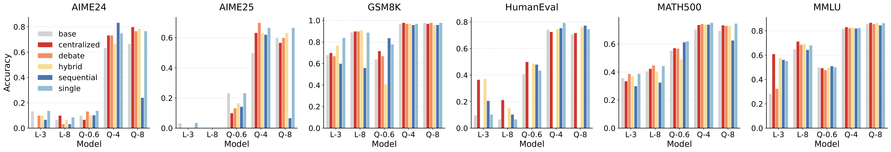
Figure 1: Accuracy comparison between Single-Agent Systems (SAS) and Multi-Agent Systems (MAS) across six reasoning benchmarks. SAS achieves the highest accuracy in 13 out of 30 configurations (43.3%).
Multi-agent systems (MAS) have emerged as a prominent paradigm for leveraging large language models (LLMs) to tackle complex tasks. However, the mechanisms governing the effectiveness of MAS built upon publicly available LLMs, specifically the underlying rationales for their success or failure, remain largely unexplored. In this paper, we revisit MAS through the perspective of entropy, considering both intra- and inter-agent dynamics by investigating entropy transitions during problem-solving across various topologies, six reasoning benchmarks, and two agentic tasks. By analyzing 245 features spanning token-, agent-, and round-level entropy, we counterintuitively find that a single agent outperforms MAS in approximately 43.3% of cases, and that entropy dynamics are largely determined during the first round of interaction. Furthermore, we provide three key observations: 1) Certainty Preference: peak entropy directly harms and stable entropy directly benefits MAS correctness; 2) Base Entropy: base models with lower entropy during problem-solving causally drive MAS performance; and 3) Task Awareness: entropy dynamics of MAS play varying roles across different tasks. Building on these insights, we introduce a simple yet effective algorithm, the Entropy Judger, to select solutions from MAS's pass@k results, leading to consistent accuracy improvements across all MAS configurations and tasks.
We study five interaction topologies. Each exhibits distinct entropy behavior and vulnerability patterns.
We systematically extract entropy from the full reasoning lifecycle of LLM-based MAS, constructing a hierarchical feature set that captures uncertainty at multiple granularities. We then apply SHAP-based interpretability analysis to identify which entropy dynamics predict MAS success or failure.
For each sample, we record the full output probability distribution at every token position across all agents and rounds, then aggregate into a 245-dimensional feature vector spanning five hierarchical levels:
We train an ensemble of XGBoost and LightGBM classifiers to predict MAS correctness from entropy features, then use SHAP (SHapley Additive exPlanations) to interpret which features matter and how:
In the figures below, each feature is characterized by its importance (how much it matters) and SHAP correlation (which direction it pushes the prediction). For example, a feature with high Ī̅ and negative ρ is a strong predictor that, when elevated, harms MAS correctness.
SHAP reveals which entropy features correlate with MAS outcomes, but correlation alone cannot establish causal mechanisms. To go further, we employ a rigorous causal inference pipeline:
This pipeline allows us to distinguish features that merely co-occur with success from those that causally drive MAS correctness. We additionally perform mediation analysis to trace how first-round entropy propagates through later rounds to influence the final outcome.
Peak entropy directly harms MAS correctness, while stable low entropy directly benefits it. For Qwen models, high entropy variance (ρ ≈ -0.92) and first-round divergence (ρ ≈ -0.87) are the primary failure drivers. Correct samples cluster at low entropy variance.
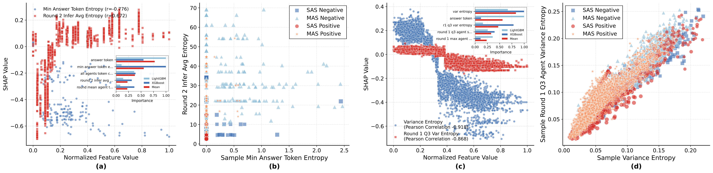
Figure 3: MAS failure analysis. High inter-agent entropy variance and first-round divergence drive failures. Correct samples cluster at low entropy regions.
The base model's intrinsic entropy during problem-solving constrains MAS effectiveness. Higher base model entropy consistently reduces MAS accuracy, with a sharp drop when entropy exceeds 100. This is not merely correlation: causal analysis confirms base entropy as a direct cause (ATE = -0.12, p < 10-21).
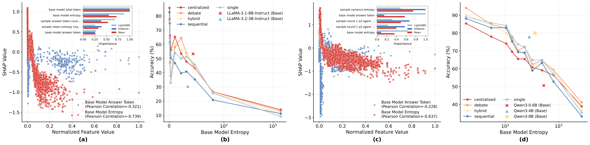
Figure 2: Base model entropy limits MAS. LLaMA operates in low-entropy range (0-100) with lower accuracy; Qwen uses higher entropy (100-1000) but achieves better performance through verification and correction.
Optimal entropy profiles vary by task difficulty. Simple tasks (GSM8K, ~82% accuracy) require fast convergence to low, stable entropy. Hard tasks (AIME, ~25% accuracy) benefit from controlled exploration but are destroyed by extreme peaks. Medium tasks exhibit a mixed pattern: moderate sustained entropy helps, but early peaks predict failure.
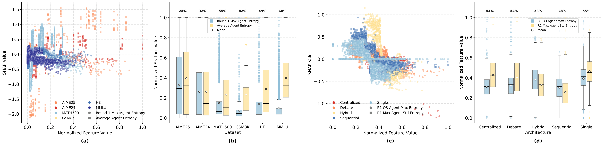
Figure 4: Entropy-SHAP relationships by dataset and architecture. Entropy values and dispersion increase with task difficulty. GSM8K accuracy ~82%, AIME2025 accuracy ~25%.
We go beyond correlation to establish causal mechanisms using PC and FCI algorithms for causal discovery, followed by DoWhy for effect estimation. All causal claims pass rigorous refutation tests (random common cause, placebo treatment, data subset).
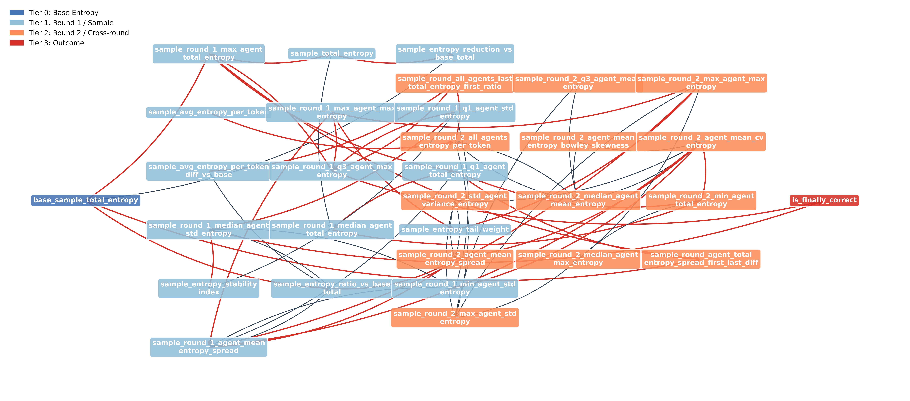
Consensus causal graph discovered by PC and FCI algorithms.
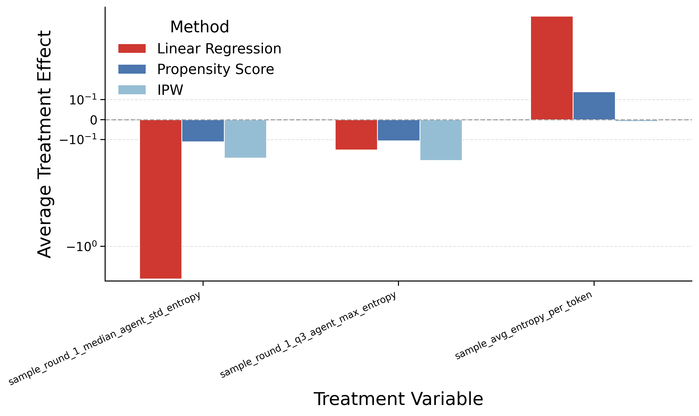
ATE forest plot: consensus direct causes (red) show more concentrated estimates than indirect causes (blue).
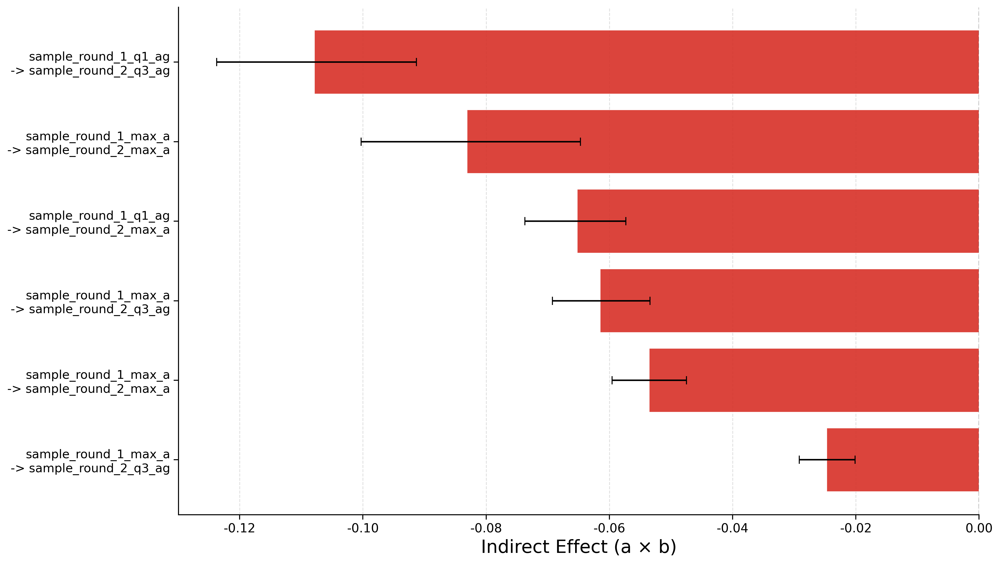
Mediation analysis: 30-33% of the causal effect of first-round inter-agent entropy dispersion is transmitted through second-round entropy.
Expanding from R=2 to R=5 rarely improves and often harms performance while consuming significantly more tokens. Debate and Hybrid architectures degrade with more rounds (divergence amplifies rather than refines). Centralized is the only architecture that consistently benefits from additional rounds.
Entropy dynamics confirm this: max, mean, and total entropy drop sharply from round 1 to round 2, then plateau from round 2 to round 5. Agents essentially stabilize after round 2, and first-round features dominate the top predictors.
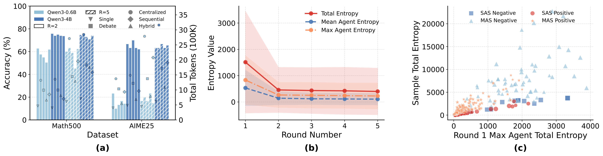
Figure 5: Round analysis (R=5). First-round total entropy is the consensus direct cause in the round 1-5 causal graph. Entropy plateaus after round 2.
Our entropy principles generalize beyond reasoning to agentic settings with tool use. We validate on GAIA (165 general AI assistant tasks across 3 difficulty levels, 6 models) and FinanceAgent (financial QA requiring SEC filings, multi-step calculations).
Key findings on GAIA (165 tasks, 6 models, 5 architectures): (1) SAS achieves the highest accuracy for 2 out of 6 models, and beats at least one MAS topology for every model. (2) Debate consistently performs worst. (3) Tool-call entropy and first-round inter-agent dispersion jointly constrain MAS correctness, mirroring the reasoning benchmark patterns.
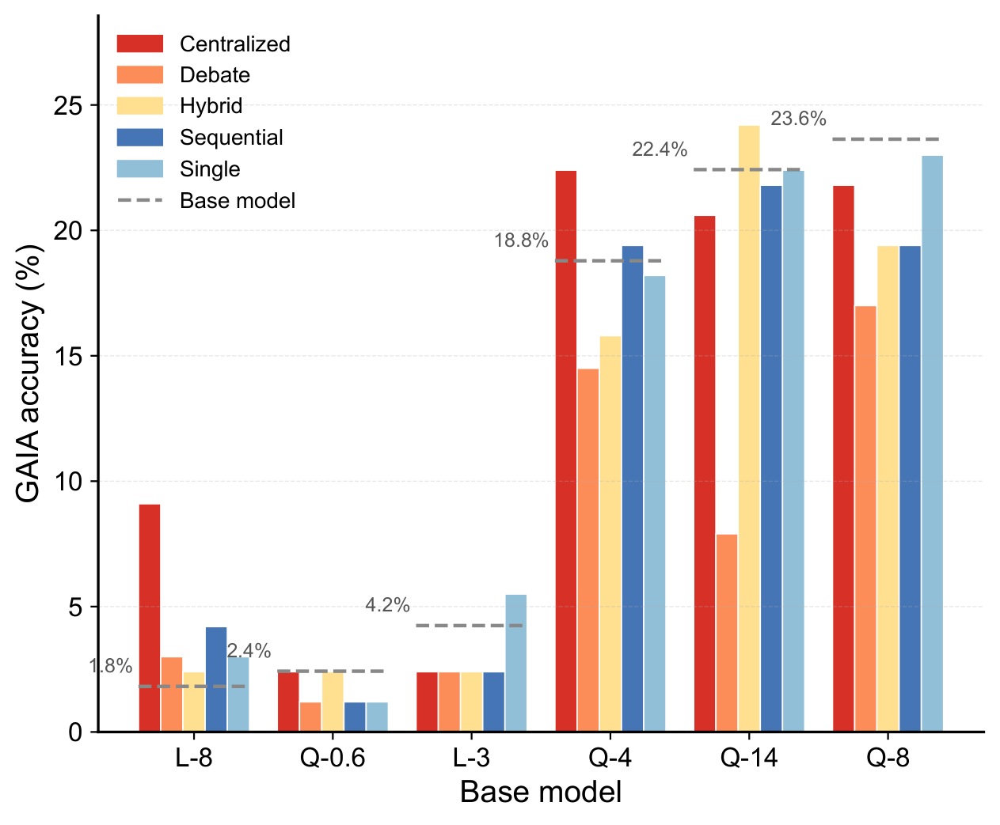
GAIA accuracy by model and architecture. Centralized often leads; Debate consistently underperforms.
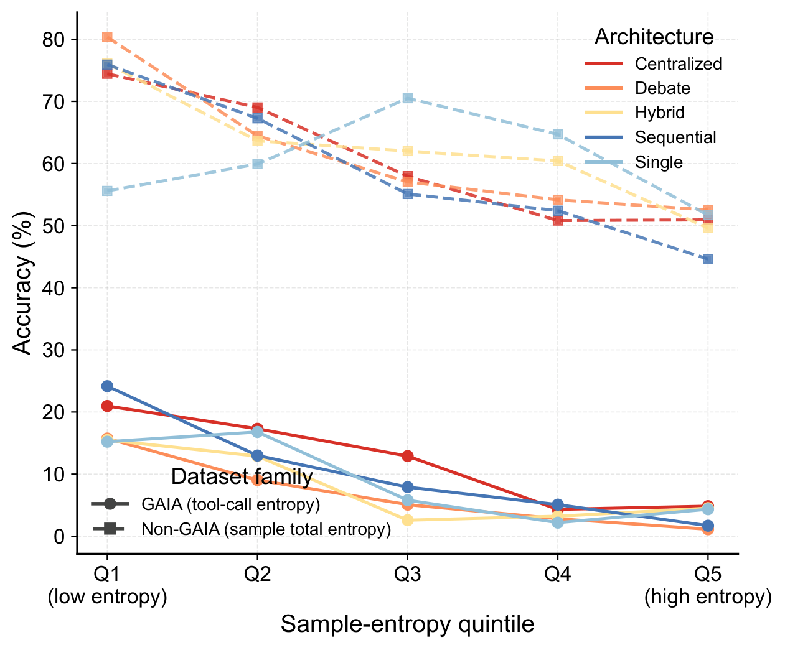
Accuracy vs. tool-call entropy quintiles: accuracy drops monotonically with increasing tool-call entropy.
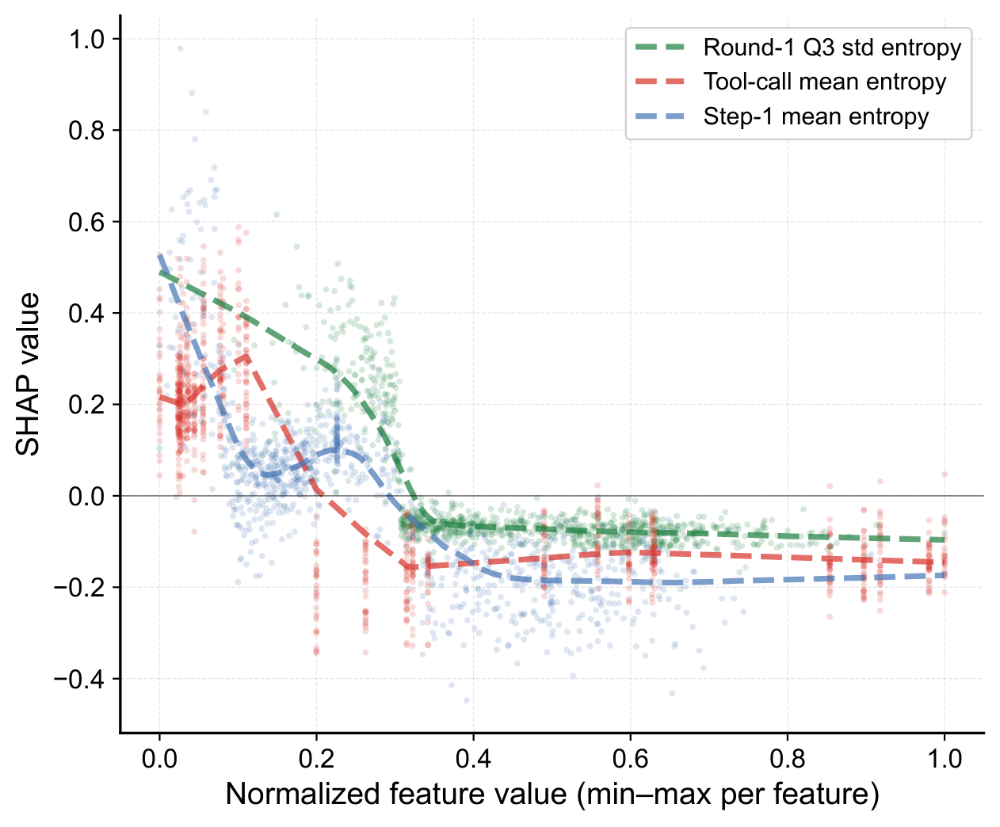
SHAP: top predictors are round-1 inter-agent dispersion, mean tool-call entropy, and step-0 mean entropy, all negative.
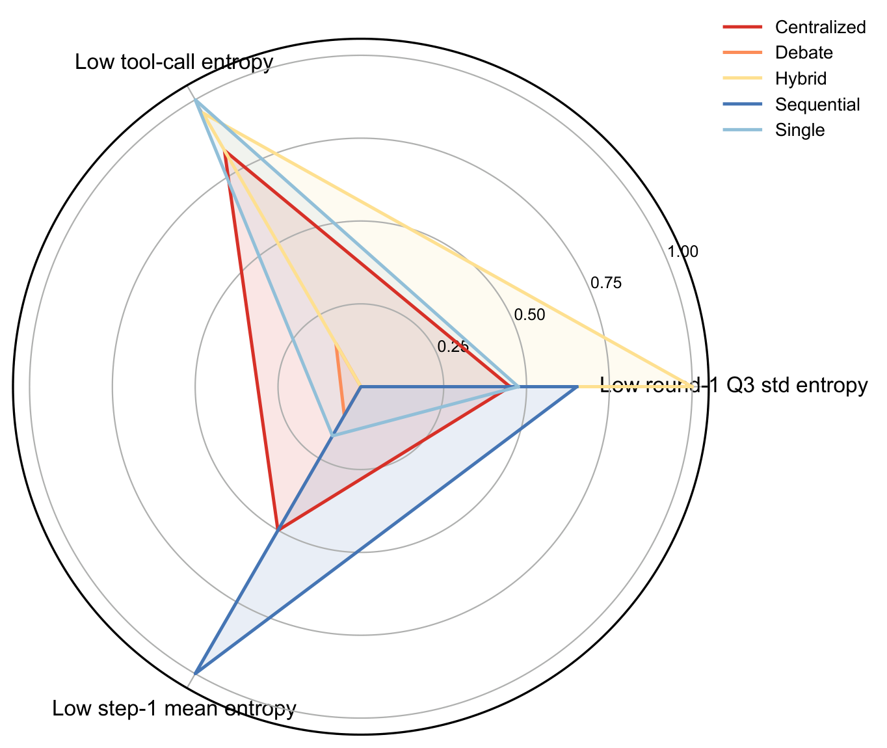
Architecture radar: no single topology dominates all axes (tool efficacy, low tool-call entropy, low round-1 max entropy).
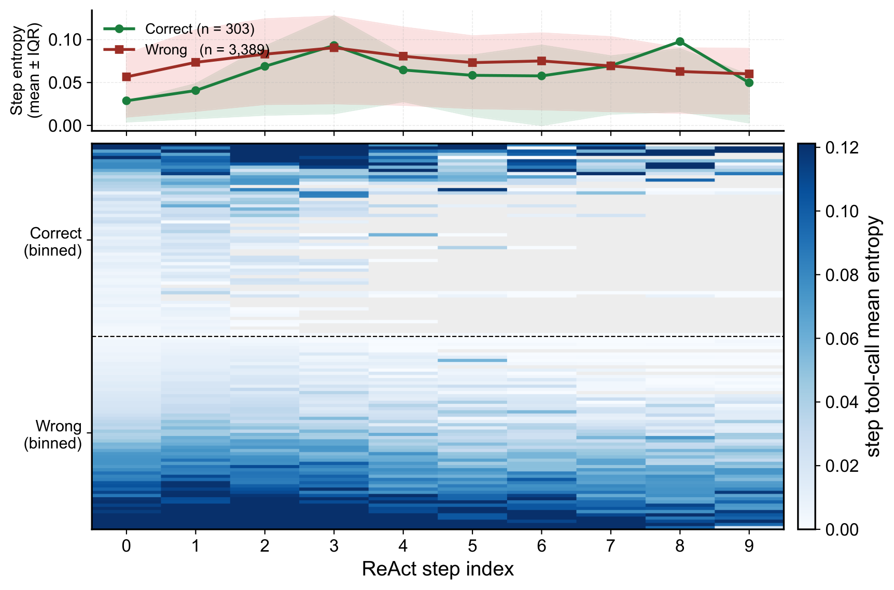
Step-wise entropy heatmap: correct trajectories (n=303) start at ~0.029 and stay low; incorrect ones (n=3389) start at ~0.057 and remain elevated.
Causal discovery on GAIA (feature space expanded to 295 dimensions with step-level features) identifies a single consensus direct cause: round-1 tool success rate (ATE = 0.068, p = 6.8×10-4). All three refutation tests pass (random common cause changes estimate by 0.1%, placebo treatment by 97.7%, data subset by 0.9%). The mediation path runs from round-1 inter-agent skewness through round-2 max agent dispersion to correctness (indirect effect = -0.019, bootstrap 95% CI [-0.042, -0.003]). This confirms that the first-round entropy principles observed in reasoning tasks extend to agentic settings with tool use.
On a financial QA benchmark requiring SEC filing retrieval, real-time stock data queries, and multi-step numerical calculations (Qwen3-4B, R=2), SAS and Sequential tie at 40% accuracy, while coordination overhead is destructive: Centralized 22%, Hybrid 12%, Debate 2%. SHAP confirms architecture itself as the top predictor (ρ ≈ 0.83-0.88), with step-0 mean entropy (ρ ≈ -0.75) as the second key factor, refining "first-round decisive" to "first reasoning step decisive."
Causal analysis identifies round-1 Q3 per-agent max entropy as the consensus direct cause (ATE = -0.197, p = 1.5×10-17), with a cross-round mediation proportion of 68.9%, the largest observed in this study. Base model correctness remains overwhelmingly predictive (ρ ≈ 0.96): tool-calling does not loosen the base-model dependency.
Using Qwen2.5-7B-SimpleRL-Zoo (trained via zero-shot RL on 8K MATH problems without SFT), we observe a striking reversal:
Causal analysis reveals two opposing direct causes: sample average entropy per token has positive ATE (+1.98, p = 3.7×10-17), while max answer token entropy remains negative (ATE = -0.31). RL training produces more reliable entropy estimates where entropy better reflects solution diversity rather than noise.
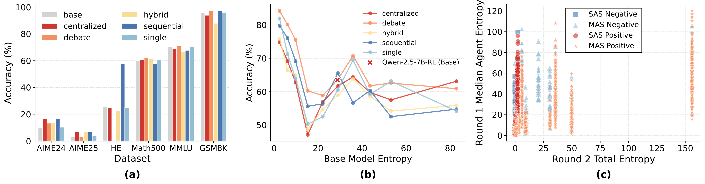
RL fine-tuning reshapes the entropy-accuracy relationship. Standard models show monotonic decline; RL models show recovery at moderate entropy, indicating productive exploration.
Causal analysis on the RL-finetuned setting reveals two opposing consensus direct causes: sample average entropy per token has a positive ATE (+1.98, p = 3.7×10-17), indicating productive exploration, while max answer token entropy remains negative (ATE = -0.31, p = 4.1×10-23), still marking failure. The mediation path runs from round-1 Q3 per-agent total entropy through round-2 total entropy to correctness (indirect effect = +0.175), confirming that RL training produces more reliable entropy estimates where moderate entropy reflects genuine solution diversity rather than noise.
SHAP analysis further supports this duality: on GMAS, the top predictor is round-1 median entropy (ρ ≈ -0.758, negative), while round-2 entropy shows a positive correlation (ρ ≈ +0.267). The interpretation: early consensus combined with calibrated later-round exploration is the optimal pattern under RL fine-tuning.
Building on our entropy insights, we introduce the Entropy Judger: an ensemble of XGBoost and LightGBM classifiers that leverages learned entropy patterns to select high-quality outputs from MAS pass@k candidates, without requiring ground-truth labels. It achieves consistent accuracy improvements across all MAS configurations and tasks.
Cross-validated classification accuracy for predicting MAS correctness:
| Feature Group | LLaMA Family | Qwen Family |
|---|---|---|
| GMAS (MAS-only, d=224) | 72.6% | 79.1% |
| Gbase-H (+ base entropy, d=241) | 74.5% | 80.7% |
| Gbase-full (all features, d=245) | 81.2% | 91.6% |
Entropy Judger selects from K=3 repeated runs, compared against random selection, majority voting, and the oracle upper bound (Pass@k). All strategies consume exactly k runs, so any accuracy gap reflects selection quality rather than additional computation.
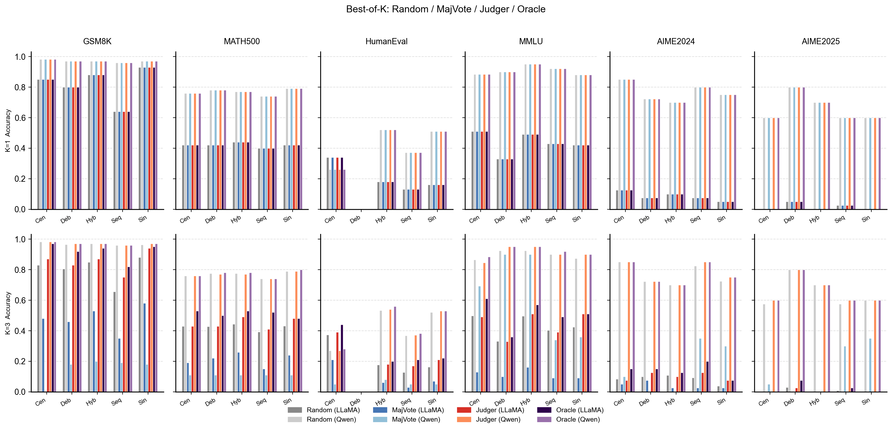
Best-of-k selection accuracy across datasets and strategies at k=3, averaged over four models and all architectures.
At k=3, the Entropy Judger consistently outperforms random selection across all benchmarks, while majority voting collapses catastrophically in the low-k regime (e.g., GSM8K MajVote drops from 0.895 to 0.315). The only exception is AIME2025, where almost all runs fail and entropy features carry little discriminative signal. An Early-Stop variant further shows that stronger models require fewer runs: Qwen3-8B on GSM8K commits after a single run with full confidence.
Beyond the main analyses above, we conduct extensive supplementary experiments to validate robustness, probe feature properties, and isolate confounding factors. Below we summarize key findings; full details are in the paper appendix.
@article{zhao2026does,
title={When Does Multi-Agent Collaboration Help? An Entropy Perspective},
author={Zhao, Yuxuan and Chen, Sijia and Su, Ningxin},
journal={arXiv preprint arXiv:2602.04234},
year={2026}
}